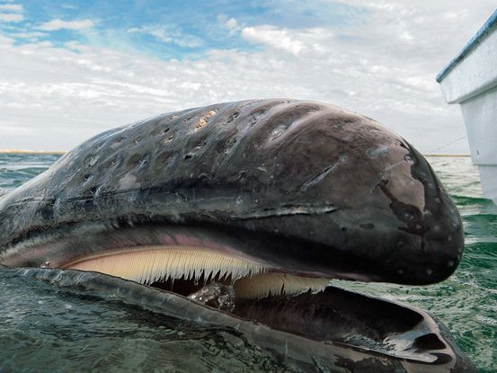

Alimentação
A alimentação das baleias tem como base animais muito pequenos, por isso elas consomem enormes quantidades deles.
Alimentação
| Baleia | Alimento | Quantidade | Local |
|---|---|---|---|
| Baleia-Azul | Crustáceos, Moluscos, Zooplancton, Krill | 4 toneladas por dia | Hemisfério Sul |
| Baleia Beluga | Lulas, Camarões, Caranguejo, Salmão | 18,2 a 27,2 kg | Hemisfério Sul |
| Baleia Jubarte | Sardinhas, Anchovas, Krill | 2 toneladas por dia | Hemisfério Norte Polar |
Baleia Jubarte
Para capturar seus alimentos, as jubartes nadam em círculos abaixo desses pequenos animais produzindo algumas bolhas para aprisioná-los. Depois, sobem nadando com a boca aberta apanhando toda a aglomeração
de uma só vez e engolindo, já que não possuem dentes para mastigação.
Outras duas técnicas de alimentação envolvem um canto alto e a movimentação forte na água, com o objetivo de atordoar o cardume, sendo assim mais fácil abocanhá-los. É com esses alimentos que acumulam gordura
suficiente para manter a temperatura corporal e as viagens migratórias.
Baleia Azul
Um fato curioso sobre a alimentação da baleia-azul é que elas não possuem dentes, sendo encontrado no local uma estrutura que lembra uma franja. Essas franjas são importantes formas de garantir a filtração da água e, consequentemente, a captura das presas.
Beluga
Como animais inteligentes que são, as belugas são mamíferos que saem para caçar em grupos para aumentar as chances de conseguir encontrar comida. Belugas têm muitos dentes e você pode pensar que elas os usam para
mastigar peixes e outras presas para depois comê-los, mas não, elas não mastigam a comida usando os dentes, a comida é engolida sem ser mastigada a qualquer momento, esse é, sem dúvida, um fato curioso e interessante.
Outro fato curioso é que todos os dias conseguem ingerir cerca de 3% de sua massa corporal.
Belugas forrageiam no fundo ou perto do fundo de águas rasas procurando comida. O pescoço flexível de uma baleia beluga permite uma ampla gama de movimentos enquanto forragea no fundo do oceano. Observações sugerem que
as belugas podem produzir sucção e um forte jato de água com suas bocas que, assim como as morsas, podem desalojar as presas do fundo. As baleias beluga também caçam peixes de cardume.